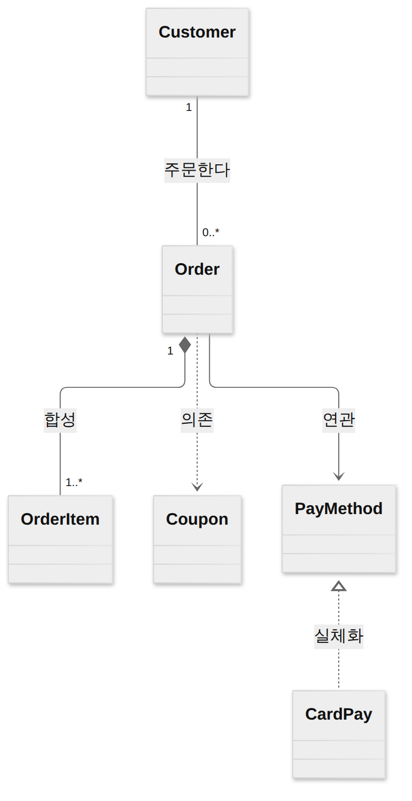
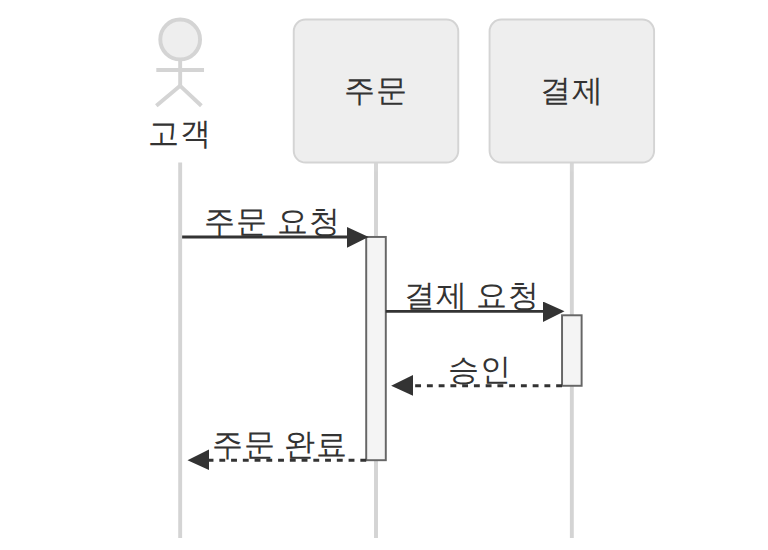
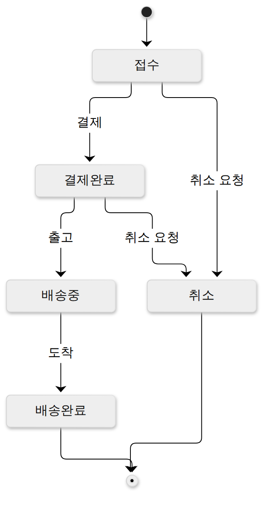

D002 · UML
A1 어제(D001)는 오늘한끼 쇼핑몰의 요구를 찾고, 정리하고, 명세서로 쓰고, 검토했어요. 그런데 명세서가 글로만 수십 쪽이면 읽는 사람마다 머릿속 그림이 달라져요. 오늘은 그 요구를 그림으로 적는 공용 언어, UML을 봐요. 쓰는 법보다 시험이 묻는 분류와 기호가 중심이에요.
- UML의 구성요소(사물·관계·다이어그램)와 사물 4종을 구별한다
- 다이어그램을 구조(정적)와 행위(동적)로 나누고, 상황에 맞는 다이어그램을 고른다
- 유스케이스의 include·extend·일반화 방향을 구별한다
- 클래스 관계 6종의 선·끝 모양과 의미, 특히 집합과 합성을 구별한다
1. 큰 그림 — UML은 왜 생겼나
1990년대 초 객체지향 분석·설계가 퍼지면서 방법론이 수십 개로 늘었어요. 방법론마다 클래스를 그리는 모양이 달라서, 같은 설계도를 두고도 “이 구름 모양은 뭐예요?”부터 물어야 했어요. 팀이 바뀌면 설계 문서를 통째로 번역해야 하는, 지금으로 치면 회사마다 Git 대신 자체 버전 관리 도구를 쓰는 상황이었어요.
이 혼란을 정리한 것이 세 사람이에요. 부치(Booch) 방법의 그래디 부치, OMT의 제임스 럼바우, OOSE의 이바 야콥슨이 표기법을 하나로 합쳤고, 이것을 1997년 표준화 단체 OMG(Object Management Group)가 표준으로 채택했어요. 이름의 Unified(통합된)가 바로 이 합병의 흔적이에요. 지금은 UML 2.x(2.5) 판을 써요.
시험에서는 UML의 성격을 묻는 문제가 가끔 나와요. 핵심은 세 가지예요. 첫째, UML은 모델링 언어라 코드처럼 실행되지 않아요. 둘째, 특정 프로그래밍 언어나 개발 방법론에 종속되지 않아요. 셋째, 그림을 그리는 데서 끝나지 않고 아래 네 가지 역할을 해요.
| UML의 역할 | 뜻 |
|---|---|
| 가시화 언어 | 머릿속 설계를 그림으로 보여 줘서 오해를 줄인다 |
| 명세화 언어 | 분석·설계 결정을 정확하고 빠짐없이 적는다 |
| 구축 언어 | 모델을 코드로 바꾸거나(순공학) 코드에서 모델을 뽑는다(역공학) |
| 문서화 언어 | 요구·설계·테스트 산출물을 남겨 소통과 유지보수에 쓴다 |
오늘도 어제의 오늘한끼 프로젝트를 이어서 따라가요. 명세서로 확정된 요구를 유스케이스로 그리고, 그 요구를 담을 클래스를 그리고, 주문이 실제로 흘러가는 모습을 시퀀스·상태·활동으로 그리고, 마지막에 서버에 올리는 모습을 배치로 그려요. 오늘 나오는 용어가 어디에 매달리는지 지도부터 봐요.
→ 이 장면의 결과물: UML이 “통합된 표준 그림 언어”라는 정체. 언어라면 단어와 문법이 있겠죠? 다음 장면은 UML의 단어(사물)와 문법(관계)이에요.
2. 장면 1 — UML의 단어와 문법 (사물·관계·다이어그램)
문장을 만들려면 단어와 문법이 필요하듯, UML 그림도 세 가지 재료로 이루어져요. 사물(Things)은 그림에 등장하는 대상 자체, 관계(Relationships)는 사물끼리 어떤 사이인지를 나타내는 선, 다이어그램(Diagrams)은 사물과 관계를 한 가지 관점으로 모아 그린 그림이에요. 오늘한끼로 치면 “주문” 클래스가 사물, 주문과 주문항목을 잇는 선이 관계, 그 둘이 그려진 클래스 다이어그램이 다이어그램이에요.
사물은 다시 네 종류로 나눠요. 이 분류는 국내 수험서에서 쓰는 정리이고 시험도 이 이름으로 나와요. 구분 기준은 “품사”로 생각하면 쉬워요. 시스템을 이루는 명사는 구조 사물, 시간에 따라 일어나는 동사는 행동 사물, 여러 요소를 묶는 폴더는 그룹 사물, 그림 옆에 붙이는 포스트잇은 주해 사물이에요.
| 사물 | 뜻 | 예 |
|---|---|---|
| 구조 사물 | 시스템의 정적인 부분(명사) | 클래스, 인터페이스, 유스케이스, 컴포넌트, 노드 |
| 행동 사물 | 시간·공간에 따라 일어나는 동작(동사) | 상호작용(메시지), 상태 머신 |
| 그룹 사물 | 요소를 묶는 단위 | 패키지 |
| 주해 사물 | 설명·제약을 덧붙이는 메모 | 노트(귀 접힌 사각형) |
네 사물은 생김새도 달라서 그림을 보면 바로 구별돼요. 특히 패키지 = 그룹 사물, 노트 = 주해 사물 짝이 단골이에요. 노트는 코드의 주석과 같은 역할이라 그림의 의미를 바꾸지 않아요. 다만 실무의 주석처럼 “나중에 고칠 것”만 잔뜩 적혀 있으면 아무도 안 고친다는 점까지 닮았어요.
→ 이 장면의 결과물: 단어 4종과 문법(관계)이라는 재료. 관계 6종은 장면 4 클래스에서 자세히 보고, 먼저 이 재료로 만드는 다이어그램이 어떤 종류가 있는지 나눠 봐요.
3. 장면 2 — 다이어그램 분류 (구조 vs 행위)
UML 2.x에는 다이어그램이 열 개가 넘어요. 다 외우려면 막막하지만, 기준은 하나예요. 그 그림이 “시스템이 무엇으로 이루어졌나”를 보여 주면 구조 다이어그램, “시스템이 어떻게 움직이나”를 보여 주면 행위 다이어그램이에요. 사진과 동영상의 차이라고 보면 돼요. 구조 다이어그램은 어느 순간을 찍어도 같은 모습이고, 행위 다이어그램은 시간이 흘러야 의미가 생겨요.
행위 다이어그램 안에는 객체끼리 메시지를 주고받는 모습을 그리는 상호작용 다이어그램 묶음이 따로 있어요. 시퀀스·커뮤니케이션·상호작용 개요·타이밍 네 개가 여기에 들어가요. 상호작용 개요는 여러 상호작용을 활동 다이어그램처럼 이어 붙인 큰 흐름도이고, 타이밍은 시간 축 위에서 상태가 언제 바뀌는지 시간 제약까지 그려요.
한 장 요약 — 다이어그램별로 무엇을 보여 주는지 정리하면 아래 표예요. 클래스·유스케이스·시퀀스·상태·활동·배치는 아래 장면에서 오늘한끼 예로 하나씩 그려 볼 거고, 나머지는 표의 설명 정도로 충분해요. 객체 다이어그램은 클래스 다이어그램의 “특정 순간 스냅숏”, 컴포넌트 다이어그램은 라이브러리·모듈 같은 구현 단위와 그 인터페이스, 복합 구조 다이어그램은 클래스 하나의 내부를 들여다본 그림이에요.
| 다이어그램 | 분류 | 무엇을 보여 주나 |
|---|---|---|
| 클래스 | 구조 | 클래스의 속성·연산과 클래스 간 관계 |
| 객체 | 구조 | 특정 시점의 인스턴스와 링크(스냅숏) |
| 컴포넌트 | 구조 | 모듈·라이브러리 같은 구현 단위와 인터페이스 |
| 배치 | 구조 | 물리 노드(서버·장비)와 그 위에 올라간 산출물 |
| 패키지 | 구조 | 요소를 묶은 그룹과 그룹 간 의존 |
| 복합 구조 | 구조 | 클래스·컴포넌트의 내부 파트와 포트 |
| 유스케이스 | 행위 | 사용자(액터) 관점에서 본 시스템 기능 |
| 활동 | 행위 | 처리 흐름(분기·병렬·스윔레인) |
| 상태 | 행위 | 한 객체가 이벤트에 따라 바뀌는 상태 |
| 시퀀스 | 행위(상호작용) | 객체 간 메시지를 시간 순서로 |
| 커뮤니케이션 | 행위(상호작용) | 객체 간 메시지를 연결(링크) 중심으로 |
| 상호작용 개요 | 행위(상호작용) | 여러 상호작용을 흐름으로 묶은 개요 |
| 타이밍 | 행위(상호작용) | 시간 제약에 따른 상태 변화 |
※ UML 2.5 명세에는 구조 쪽에 프로파일 다이어그램도 있어요(7종). 시험 선지는 위 6종 기준으로 판단하면 돼요.
→ 이 장면의 결과물: 다이어그램을 두 서랍에 나눠 담았어요. 이제 오늘한끼 프로젝트로 돌아가, 어제 확정한 요구부터 그림으로 옮겨 봐요. 첫 그림은 유스케이스예요.
4. 장면 3 — 요구를 그림으로 (유스케이스 다이어그램)
요구사항 명세서는 개발자에게는 충분하지만, 고객에게 보여 주기엔 너무 길어요. 유스케이스 다이어그램은 “누가 이 시스템으로 무엇을 할 수 있나”를 한 장에 보여 주는 그림이라, 요구사항 단계에서 고객과 범위를 맞출 때 가장 먼저 그려요. 어제 D001에서 도출 기법으로도 잠깐 나왔던 바로 그 그림이에요.
구성요소는 네 가지예요. 각 요소가 오늘한끼에서 무엇인지 함께 보세요.
| 구성요소 | 뜻 | 오늘한끼 예 |
|---|---|---|
| 액터 | 시스템 밖에서 시스템과 상호작용하는 사람·외부 시스템. 사람 모양(졸라맨)으로 그림 | 고객, 결제대행사(외부 시스템) |
| 유스케이스 | 액터에게 제공하는 기능 하나. 타원으로 그림 | 상품 검색, 주문하기 |
| 시스템 경계 | 시스템 범위를 나타내는 사각형. 안쪽이 만들 범위 | “오늘한끼” 사각형 |
| 관계 | 연관(실선), 포함 «include», 확장 «extend», 일반화 | 고객 — 주문하기 |
액터에서 눈여겨볼 점은 “사람이 아니어도 된다”는 거예요. 결제대행사(PG)처럼 시스템 밖에서 우리 시스템과 주고받는 외부 시스템도 액터예요. 반대로 우리 시스템 안의 DB나 모듈은 액터가 아니에요. 사람 모양으로 그려진 결제 API를 처음 보면 좀 어색하지만, 규칙상 그게 맞아요.
포함 «include» — 반드시 실행하는 공통 기능
오늘한끼에서는 주문하기, 주문 취소, 리뷰 쓰기가 모두 로그인을 먼저 해야 해요. 세 유스케이스에 로그인 단계를 각각 적으면 같은 내용이 세 번 반복되겠죠. 그래서 공통 부분을 “로그인” 유스케이스로 따로 빼고 «include»로 끌어와요. 코드에서 중복 로직을 메서드로 추출하고 여러 곳에서 호출하는 것과 똑같은 발상이에요.
포함 관계에서 기본 유스케이스(주문하기)는 포함된 유스케이스(로그인) 없이는 완결되지 않아요. 그래서 포함은 항상 실행되는 필수 관계이고, 점선 화살표는 기본 → 포함되는 쪽으로 그려요. 호출하는 쪽에서 호출되는 쪽으로 화살표가 간다고 생각하면 돼요.
확장 «extend» — 조건이 맞을 때만 끼어드는 부가 기능
쿠폰 적용은 다르게 생겼어요. 쿠폰이 있는 고객만, 원할 때만 쓰는 기능이라 주문하기는 쿠폰 없이도 혼자 완결돼요. 이렇게 기본 흐름에 조건부로 덧붙는 기능을 «extend»로 그려요. 기본 유스케이스 안에 “여기서 끼어들 수 있음”이라고 표시한 지점을 확장점(extension point)이라고 해요.
확장 관계의 점선 화살표는 확장하는 쪽 → 기본 쪽으로 그려요. include와 방향이 정반대예요. 기본 유스케이스는 쿠폰이 존재하는지조차 몰라도 되고, 쿠폰 적용이 알아서 “저 거기 붙을게요” 하고 찾아오는 모양이에요. 스프링의 AOP처럼 원래 코드는 그대로 두고 바깥에서 기능을 끼워 넣는 느낌이에요.
두 관계를 나란히 놓으면 방향 차이가 더 잘 보여요. 아래 그림에서 기본 유스케이스 “주문하기”가 위에서는 화살표의 출발점, 아래에서는 도착점이에요.
| 구분 | 포함 «include» | 확장 «extend» |
|---|---|---|
| 성격 | 반드시 실행(필수) | 조건이 맞을 때만 실행(선택) |
| 화살표 | 점선, 기본 → 포함되는 쪽 | 점선, 확장 → 기본 쪽 |
| 용도 | 여러 유스케이스의 공통 기능 추출 | 기본 흐름에 부가 기능을 덧붙임(확장점) |
| 기본 유스케이스는 | 포함된 것 없이는 완결되지 않음 | 확장 없이도 혼자 완결 |
| 예 | 주문하기 → 로그인 | 쿠폰 적용 → 주문하기 |
일반화 — 액터끼리, 유스케이스끼리의 상속
마지막 관계는 일반화예요. 클래스의 상속과 같은 개념을 액터와 유스케이스에 쓰는 거예요. 오늘한끼에서 회원은 고객이 할 수 있는 일을 다 하면서 적립금 사용 같은 일을 더 할 수 있으니 “회원은 고객의 한 종류”예요. 결제도 카드 결제와 간편 결제로 나뉘죠. 이런 is-a 관계를 실선 + 빈 삼각형으로 그리고, 삼각형은 부모 쪽에 붙어요.
→ 이 장면의 결과물: “누가 무엇을 할 수 있나”가 그려진 유스케이스 다이어그램. 기능 목록이 정해졌으니, 이제 그 기능이 다룰 데이터와 책임을 담을 클래스를 그릴 차례예요.
5. 장면 4 — 구조를 그림으로 (클래스 다이어그램과 관계 6종)
유스케이스 “주문하기”를 실제로 만들려면 주문, 주문항목, 고객, 결제수단 같은 클래스가 필요해요. 클래스 다이어그램은 이 클래스들이 각각 무엇을 가지고(속성) 무엇을 하며(연산) 서로 어떤 사이인지(관계)를 그린 설계도예요. 구조 다이어그램의 대표이고, 실무에서 가장 많이 그리는 UML이기도 해요.
클래스 한 칸 — 이름·속성·연산
클래스는 세로로 세 칸 나뉜 사각형이에요. 맨 위가 이름, 가운데가 속성(필드), 아래가 연산(메서드)이에요. 속성과 연산 앞의 기호는 접근 제어자(가시성)로, 자바를 쓰는 진수 님에게는 익숙한 그 public·private이에요. 기호 네 개만 짝지어 두면 돼요.
관계 6종 — 선과 끝 모양
클래스 사이의 관계는 여섯 가지예요. 하나씩 “왜 따로 이름이 붙었는지”부터 봐요. 기호는 선 두 종류(실선·점선)와 끝 모양 다섯 종류(없음·빈 마름모·채운 마름모·빈 삼각형·열린 화살표)의 조합이에요.
연관(Association)은 두 클래스가 서로를 알고 참조하는 가장 기본적인 관계예요. 학생과 강의처럼 서로 필드로 상대를 가리키는 사이이고, 실선 하나로 그려요. 한쪽만 상대를 안다면 그쪽에 열린 화살표를 달아 방향을 표시해요. 연관에는 소유 개념이 없어서, 둘 중 하나가 사라져도 다른 쪽은 아무 영향이 없어요.
집합(Aggregation)은 연관 중에서도 “전체와 부분” 사이인 관계예요. 컴퓨터와 모니터처럼 하나가 다른 하나의 부품이지만, 부분이 독립적으로 존재할 수 있어요. 컴퓨터를 버려도 모니터는 남아서 다른 컴퓨터에 연결할 수 있죠. 실선에 빈 마름모를 전체 쪽에 붙여요.
합성(Composition)은 집합보다 강한 전체–부분 관계로, 포함 관계라고도 불러요. 주문과 주문항목처럼 부분이 한 전체에만 속하고, 전체가 사라지면 부분도 함께 사라져요(생명주기 공유). 주문 없이 떠도는 주문항목은 의미가 없으니까요. 실선에 채운 마름모를 전체 쪽에 붙여요. DB로 치면 ON DELETE CASCADE가 걸린 외래 키와 같은 사이예요.
일반화(Generalization)는 상속, 즉 is-a 관계예요. “개는 동물이다”처럼 자식이 부모의 성질을 물려받아요. 실선에 빈 삼각형을 부모 쪽에 붙이고, 그래서 화살표 방향은 자식 → 부모예요. 자바의 extends예요.
실체화(Realization)는 인터페이스와 그 구현 클래스의 관계예요. 결제수단 인터페이스가 “결제한다”는 약속만 정하고, 카드결제 클래스가 그 약속을 실제로 지켜요. 점선에 빈 삼각형을 인터페이스 쪽에 붙여요. 자바의 implements이고, 일반화와 삼각형은 같지만 선이 점선이라는 점이 다르죠.
의존(Dependency)은 가장 약한 관계로, 한 클래스가 다른 클래스를 잠깐 사용하는 사이예요. 주문이 할인 계산 메서드의 매개변수로 쿠폰을 받아 쓰고 끝나는 경우예요. 필드로 붙들고 있지는 않지만, 쿠폰 클래스가 바뀌면 주문 코드도 영향을 받아요. 점선 + 열린 화살표로 그리고, 화살표는 쓰이는 쪽을 가리켜요.
한 장 요약 — 여섯 관계를 표로 다시 모으면 이래요. 각 줄은 위 문단에서 설명한 내용 그대로예요.
| 관계 (예) | 선 · 끝 모양 | 의미 |
|---|---|---|
| 연관 학생 — 강의 | 실선, 끝 없음(방향 있으면 열린 화살표) | 서로 알고 참조 |
| 집합 컴퓨터 — 모니터 | 실선 + 빈 마름모(전체 쪽) | 전체–부분, 부분이 독립적으로 존재 가능 |
| 합성(포함) 주문 — 주문항목 | 실선 + 채운 마름모(전체 쪽) | 전체–부분, 생명주기 공유 |
| 일반화 개 — 동물 | 실선 + 빈 삼각형(부모 쪽) | 상속, is-a |
| 실체화 카드결제 — 결제수단 | 점선 + 빈 삼각형(인터페이스 쪽) | 인터페이스 구현 |
| 의존 주문 — 쿠폰 | 점선 + 열린 화살표(쓰이는 쪽) | 잠깐 사용, 상대가 바뀌면 영향 |
기호를 외울 때는 선부터 보고 끝을 보는 순서가 편해요. 실선은 “제대로 붙어 있는 사이”라 연관·집합·합성·일반화 넷이고, 점선은 “잠깐 쓰거나(의존) 약속만 한(실체화)” 느슨한 사이 둘이에요. 빈 삼각형이 양쪽 칸에 다 있다는 점이 함정 포인트예요.
집합 vs 합성 — 부분이 살아남느냐
여섯 관계 중 시험이 가장 집요하게 묻는 짝이 집합과 합성이에요. 둘 다 마름모를 전체 쪽에 달고 “전체–부분”을 뜻해서, 차이는 딱 하나 생명주기예요. 집합의 부분은 전체와 헤어져도 각자 살고, 합성의 부분은 전체와 운명을 같이해요. 마름모 속을 비웠으면 “관계도 비어 있다(느슨하다)”, 꽉 채웠으면 “꽉 묶였다”로 기억하면 돼요.
코드로 보면 감이 더 와요. 합성은 전체가 부분을 직접 만들어 소유하고, 집합은 밖에서 만든 것을 받아서 연결만 해요. 의존은 필드가 아니라 메서드 안에서만 잠깐 등장해요.
// 합성: Order가 OrderItem을 직접 만들고 소유한다
class Order {
private final List<OrderItem> items = new ArrayList<>();
void add(Product p, int qty) { items.add(new OrderItem(p, qty)); }
}
// 집합: 밖에서 만든 Monitor를 받아 연결만 한다
class Computer {
private Monitor monitor;
Computer(Monitor m) { this.monitor = m; }
}
// 의존: 메서드 안에서 잠깐 쓰고 끝
class Order {
int discount(Coupon c) { return c.rate() * total(); }
}
다중성 — 몇 대 몇인가
관계선 양 끝에 붙는 숫자는 다중성(multiplicity)이에요. 한 객체가 상대 객체를 몇 개 가질 수 있는지를 적어요. 1은 정확히 하나, 0..1은 없거나 하나, * 또는 0..*는 0개 이상, 1..*은 하나 이상이에요. 오늘한끼에서 고객 한 명은 주문을 0개 이상 할 수 있고, 주문 하나에는 주문항목이 최소 1개 있어야 해요. 빈 장바구니로 주문 버튼을 누르는 고객은 기획서에만 존재하길 바라는 거죠.
아래는 오늘한끼 주문 영역을 실제 클래스 다이어그램 도구로 그린 모습이에요. 이름은 도구 표기상 영어로 적었어요. Customer–Order는 연관(1 대 0..*), Order–OrderItem은 합성, Order–Coupon은 의존, PayMethod–CardPay는 실체화예요.

→ 이 장면의 결과물: 오늘한끼 주문 영역의 클래스 다이어그램. 지금까지는 “무엇이 있나”를 그렸으니, 이제 이 객체들이 “어떻게 움직이나”를 그릴 차례예요.
6. 장면 5 — 움직임을 그림으로 (시퀀스·커뮤니케이션·상태·활동)
클래스 다이어그램은 사진이라, 고객이 주문 버튼을 눌렀을 때 실제로 무슨 일이 일어나는지는 보여 주지 못해요. 행위 다이어그램은 이 움직임을 서로 다른 각도에서 찍은 동영상이에요. 같은 주문 장면을 네 가지 카메라로 찍어 볼게요.
시퀀스 다이어그램 — 시간 순서로 본 메시지
시퀀스 다이어그램은 객체끼리 주고받는 메시지를 시간 순서대로 위에서 아래로 그려요. 장애가 났을 때 로그를 시간순으로 따라가며 “누가 누구를 언제 불렀나” 보는 것과 같은 시선이에요. 그래서 문제에 “시간 순서”, “메시지 순서”라는 말이 보이면 시퀀스예요.
구성요소를 하나씩 보면, 맨 위에 액터와 객체가 가로로 서고, 각 객체 아래로 내려가는 세로 점선이 생명선(객체가 살아 있는 시간)이에요. 생명선 위의 가는 막대는 활성 박스(실행 중인 구간)이고, 가로 화살표가 메시지예요. 실선 화살표는 호출, 점선 화살표는 응답이에요. 조건 분기나 반복은 프레임(alt, opt, loop 같은 이름표가 달린 사각형)으로 감싸요.

커뮤니케이션 다이어그램 — 연결로 본 메시지
같은 장면을 객체 사이의 연결(링크) 중심으로 다시 그린 것이 커뮤니케이션 다이어그램이에요(UML 1에서는 협력 다이어그램이라고 불렀어요). 시간 축이 없으니 순서는 메시지 앞의 번호(1, 1.1, 2…)로 표시해요. 누가 누구와 직접 연결돼 있는지가 한눈에 보여서, “이 서비스는 대체 몇 군데와 얽혀 있나”를 볼 때 유리해요.
상태 다이어그램 — 한 객체의 일생
이번에는 카메라를 객체 하나에 고정해요. 주문 객체는 접수되고, 결제되고, 배송되고, 끝나는 일생을 살아요. 상태 다이어그램은 한 객체가 이벤트에 따라 어떤 상태로 바뀌는지(상태 전이)를 그려요. 주문 상태 enum과 그 전이 규칙을 그대로 그림으로 옮긴 거라고 보면 돼요.
검은 점이 시작 상태, 테두리가 있는 점이 종료 상태, 둥근 사각형이 상태, 화살표 위의 글자가 상태를 바꾸는 이벤트예요. 아래 그림에서 배송이 시작된 주문에는 “취소 요청” 화살표가 없다는 점도 보세요. 이미 트럭에 실린 밀키트를 취소하고 싶다는 고객의 마음은 그림 밖의 영역이에요.

활동 다이어그램 — 처리 흐름과 책임 분담
활동 다이어그램은 업무나 로직의 처리 흐름을 그려요. 생김새는 순서도와 비슷하지만, 병렬 처리와 “누가 하는 일인지”까지 표현할 수 있어요. 문제에 “처리 흐름”, “분기”, “병렬”, “스윔레인”이 보이면 활동 다이어그램이에요.
구성요소는 이래요. 검은 점(시작 노드)에서 출발해 둥근 사각형(액션)을 거치고, 마름모(결정 노드)에서 조건에 따라 갈라져요. 굵은 막대 중 갈라지는 쪽이 포크(병렬 시작), 합쳐지는 쪽이 조인(병렬 합류)이에요. 세로로 나눈 칸은 스윔레인으로, 수영장 레인처럼 각 담당자의 구역을 나눠 줘요. 테두리 있는 점이 종료 노드예요.
→ 이 장면의 결과물: 주문 장면을 네 각도로 찍은 동영상. 마지막으로, 완성된 프로그램이 실제로 어느 장비에서 돌아가는지를 그리면 그림 세트가 끝나요.
7. 장면 6 — 장비에 올리기 (배치·컴포넌트·패키지)
설계가 끝나도 프로그램은 결국 어떤 서버 위에서 돌아야 해요. 배치 다이어그램은 서버·PC·장비 같은 물리적 노드를 입체 상자로 그리고, 그 안에 올라가는 산출물(jar 파일, DB 엔진 등)과 노드 사이 통신을 그려요. 인프라 구성도를 UML 문법으로 그린 거예요. 문제에 “하드웨어”, “물리적 배치”, “노드”가 보이면 배치예요.
컴포넌트 다이어그램은 한 단계 위에서 소프트웨어를 조립 단위로 봐요. 주문 모듈, 결제 모듈 같은 컴포넌트가 어떤 인터페이스를 제공하고 어떤 인터페이스를 필요로 하는지를 그려요. 배치가 “어디서 도나”라면 컴포넌트는 “무엇을 조립했나”예요.
패키지 다이어그램은 클래스 등 요소를 탭 달린 폴더(패키지)로 묶고 패키지끼리의 의존을 그려요. 자바 패키지 구조를 그대로 떠올리면 돼요. 패키지 순환 의존이 이 그림에서 처음 들통나는 경우가 많아서, 그리는 사람보다 리뷰하는 사람이 더 좋아하는 그림이에요.
세 그림은 모두 구조 다이어그램이에요. 시간 개념이 없으니까요. 이제 장면 2의 분류표에 있는 다이어그램을 오늘한끼 예로 거의 다 그려 봤어요. 문제를 풀 때는 반대로, 문제 속 키워드에서 다이어그램을 찾아가면 돼요.
→ 이 장면의 결과물: 요구(유스케이스) → 구조(클래스) → 움직임(시퀀스·상태·활동) → 장비(배치)까지 오늘한끼 그림 세트 완성. 이 클래스·시퀀스 표기는 D004 모델링 기법(럼바우)과 D013 객체지향, D014 디자인패턴에서 다시 쓰여요.
8. 한 장으로 다시 꿰기
지금까지 따라온 장면을 표 하나로 다시 꿰면 이래요. 앞 장면의 결과물이 다음 장면의 재료라는 점을 다시 보세요.
| 장면 | 하는 일 · 시험 개념 | 결과물 |
|---|---|---|
| 1. 단어와 문법 | 사물 4종(구조·행동·그룹·주해), 관계, 다이어그램 | 그림 재료 |
| 2. 분류 | 구조 6종(클객컴배패복) vs 행위 | 다이어그램 두 서랍 |
| 3. 요구 그리기 | 유스케이스: 액터·경계, include(필수·기본→포함), extend(선택·확장→기본), 일반화 | 유스케이스 다이어그램 |
| 4. 구조 그리기 | 클래스 세 칸·가시성, 관계 6종, 집합 vs 합성, 다중성 | 클래스 다이어그램 |
| 5. 움직임 그리기 | 시퀀스(시간 순서), 커뮤니케이션(링크·번호), 상태(이벤트), 활동(흐름·스윔레인) | 행위 다이어그램 세트 |
| 6. 장비에 올리기 | 배치(노드), 컴포넌트(모듈·인터페이스), 패키지(그룹) | 배치 다이어그램 |
- UML 구성요소 = 사물·관계·다이어그램. 사물 = 구조·행동·그룹·주해(패키지 = 그룹, 노트 = 주해).
- 구조 다이어그램 6종 클객컴배패복, 나머지는 행위. 상태·유스케이스를 구조로 고르게 하는 함정.
- 키워드 → 다이어그램: 시간 순서 = 시퀀스, 상태 전이 = 상태, 처리 흐름·스윔레인 = 활동, 물리 노드 = 배치.
- 관계 기호: 실선/점선 + 빈·채운 마름모(전체 쪽) + 빈 삼각형(부모·인터페이스 쪽) + 열린 화살표(의존).
- 집합 vs 합성 = 부분이 독립적으로 사느냐, 같이 사라지느냐. 빈 마름모는 연관이 아니라 집합.
- include = 필수·공통 추출·기본 → 포함 / extend = 선택·부가·확장 → 기본.
9. 오답 복습 — D001 2번 (워크숍)
어제 “상충하는 요구를 함께 논의해 합의” 문제에서 정적 분석을 골랐어요. 두 용어는 쓰이는 단계부터 달라요. 워크숍은 요구사항 단계에서 영업·운영처럼 이해관계자들을 한자리에 모아 집중 논의로 부딪히는 요구를 조율하고 합의하는 도출 기법이에요. 진행자가 있고, 끝나면 합의안이 남아요.
정적 분석은 구현·테스트 쪽 기법으로, 코드를 실행하지 않고 소스를 훑어 결함이나 코딩 규칙 위반을 찾아요. 진수 님이 매일 보는 린터나 SonarQube 경고가 바로 정적 분석이에요. 요구를 모으는 일과는 거리가 멀죠. “분석”이라는 단어가 요구 “분석”과 겹쳐서 손이 갔을 가능성이 커요.
한 장 요약 — 도출 기법을 상황과 짝지어 다시 보면 이래요.
| 상황 | 도출 기법 |
|---|---|
| 소수 핵심 담당자에게 깊이 묻기 | 인터뷰 |
| 많은 사람에게 같은 질문을 빠르게 | 설문 |
| 비판 없이 아이디어를 많이 내기 | 브레인스토밍 |
| 여러 이해관계자가 모여 충돌 조율·합의 | 워크숍 |
| 실제 업무 현장을 지켜보기 | 관찰 |
재확인 문제는 아래 3번이에요.
확인 문제 (채점 완료 · 3/3)
- 다음 중 구조(정적) 다이어그램은?
정답·해설
③ 컴포넌트. 구조 6종(클객컴배패복) 중 하나예요. 시퀀스·상태·활동은 시간에 따라 움직이는 행위(동적) 다이어그램이에요. 주문이 삭제되면주문항목도 함께 소멸하는 관계는?정답·해설
③ 합성(채운 마름모 ◆). 전체가 사라지면 부분도 같이 사라지는 강한 소유예요. 집합(빈 마름모 ◇)은 부분이 따로 살아남을 수 있고, 연관·의존은 소유 관계가 아니에요.- (오답 복습) 영업·물류·회계 담당자의 요구가 서로 부딪혀서, 이해관계자들을 한자리에 모아 집중 논의로 합의안을 만들려 한다. 알맞은 요구사항 도출 기법은?
정답·해설 (D001-2 재확인 통과)
② 워크숍. 여러 이해관계자를 한자리에 모아 상충하는 요구를 조율·합의하는 기법이에요. 설문은 다수에게 같은 질문, 관찰은 현장 업무 관찰, 정적 분석은 코드를 실행하지 않는 품질 검사라 도출 기법이 아니에요.
고른 뒤 답안 복사 → 디스코드 공부 채널에 붙여넣기 하면 돼요.
답장: 정처기 D002: 1)번호 2)번호 3)번호